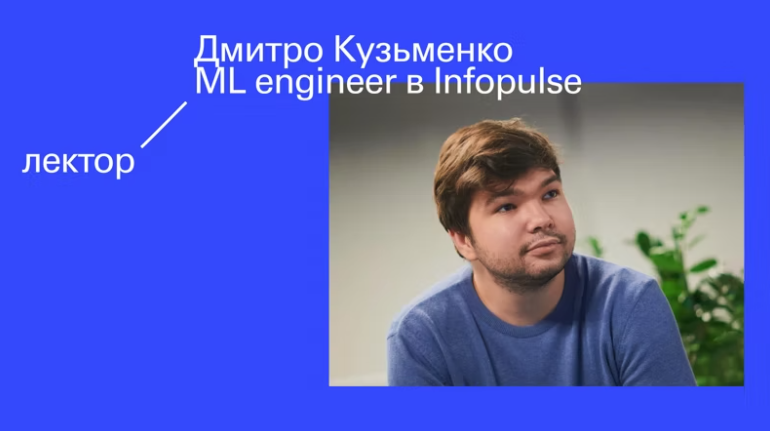
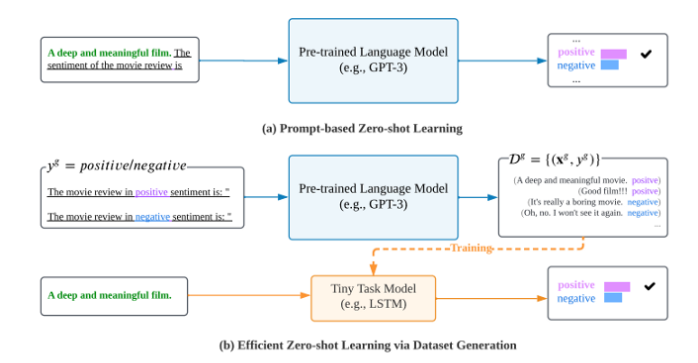
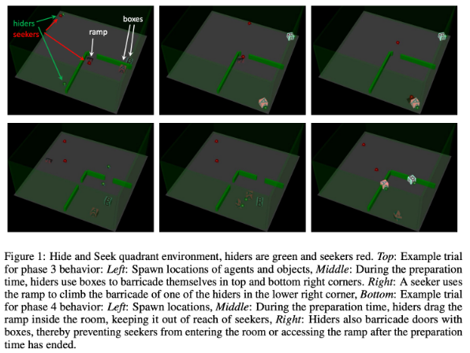
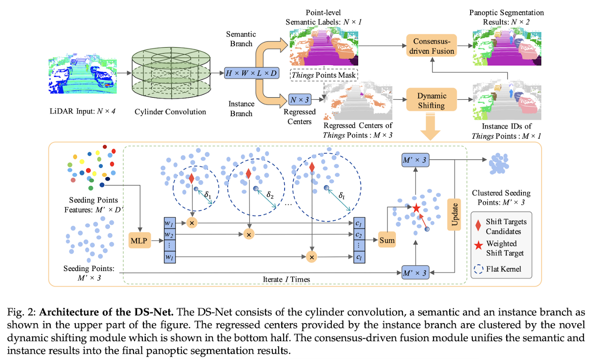
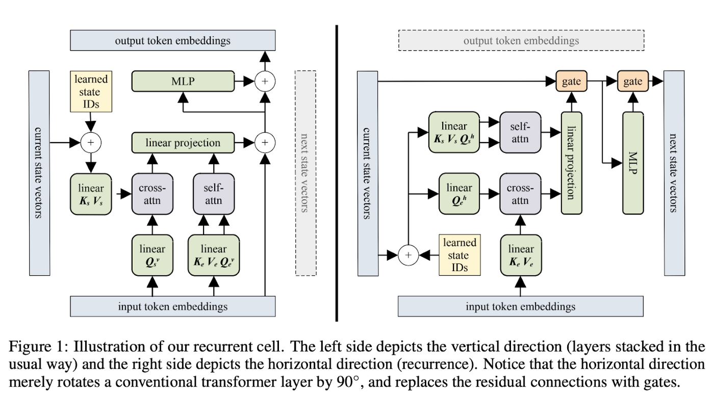
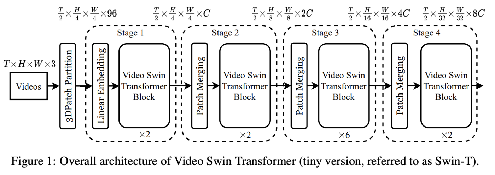
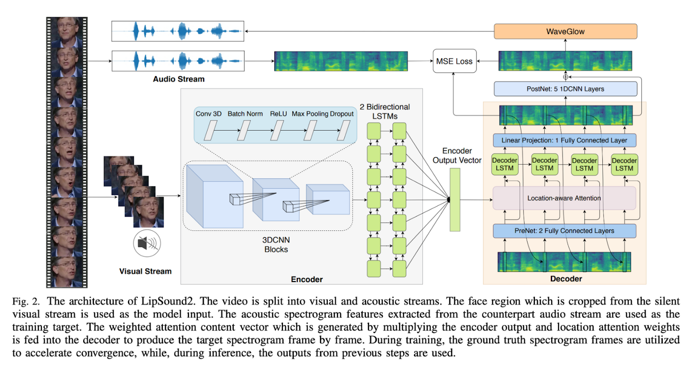

I am a Machine Learning Researcher and Engineer, and a postgraduate student in Applied Mathematics at the National University of Kyiv-Mohyla Academy. My research direction involves the intersection of Machine Learning, Computer Vision, and Reinforcement Learning focused on Healthcare and Intelligent Assistive Technology. My recent projects include devising deep learning architectures for various domains such as spatiotemporal, audio, and textual data. Currently, I am focusing on the Adversarial Robustness in Deep Learning models.
During my undergraduate sophomore year in Software Engineering, I have discovered the world of AI and got instantly attached to it. Since then I have orchestrated full ML development pipelines and designed a couple of end-to-end solutions still used in production. I am keen on teaching and mentoring everyone interested in Machine Learning.
In my free time, I read guest lectures, guide mentees, and run a DL paper review blog on Medium. I am always open to new collaborations, hit me up with an email if you want to chat!
Book a mentoring session with me via Projector Mentorship Platform.
|  |
Held an introductory guest lecture on the basics of regression in ML, showcased a full modelling pipeline.
|
|  |
An interesting take on zero-shot learning was introduced in a paper that was dated Feb 16.
|
|  |
The paper generalises curriculum learning for environment generation to multi-agent environments. Teacher-Student Curriculum Learning is used, where an RL-trained teacher samples environments of one or several student agents and is trained alongside the students.
|
|  |
Dynamic Shifting Network (DS-Net) is proposed, which serves as an effective panoptic segmentation framework in the point cloud realm.
|
|  |
Overview — Block-Recurrent Transformer
11 Mar 2022
The authors introduce the Block-Recurrent Transformer, which applies a transformer layer in a recurrent fashion along a sequence, and has linear complexity with respect to the sequence length.
|
|  |
Overview — Video Swin Transformer
24 Jun 2021
Video Swin Transformer advocates an inductive bias of locality in video Transformers, leading to a better speed-accuracy trade-off compared to previous approaches which compute self-attention globally even with spatial-temporal factorization.
|
|  |
Overview — LipSound2: Self-Supervised Pre-Training for Lip-to-Speech Reconstruction and Lip Reading
9 Dec 2021
The authors propose LipSound2 which consists of an encoder-decoder architecture and location-aware attention mechanism to map face image sequences to mel-scale spectrograms directly without requiring any human annotations.
|